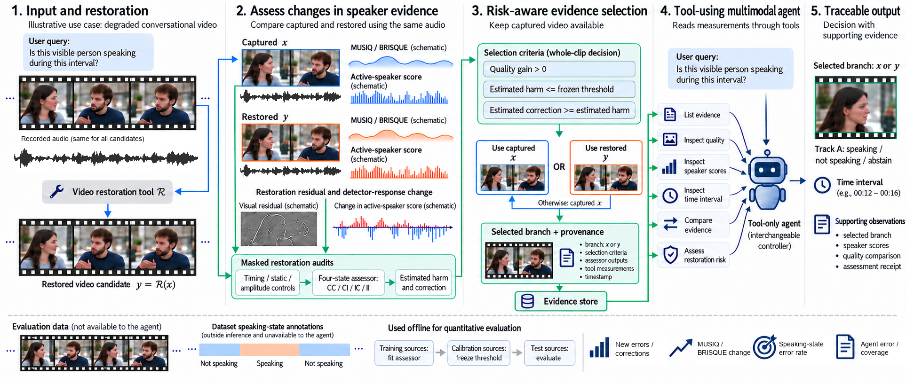

Applied AI Engineer · Research
Pradeep Bolleddu
Building reliable, research-driven AI systems and intelligent agents.
About
I’m Pradeep Bolleddu, an Applied AI Engineer at CompFly AI, building scalable MLSecOps platforms and secure governance workflows for production AI agents. Previously, as an Applied Scientist at Oliv AI, I engineered large-scale LLM classification and RAG conversational systems to automate customer workflows. By connecting agents with real-time monitoring, I study how best to track evidence and decisions for recursive agentic systems and whether durable memory improves agentic assisted scientific discoveries. I currently reside in California.
My academic background includes a Master's in Data Science from the University of Massachusetts, where I focused on healthcare generative models with Prof. Julia Fang and high-performance computing with Prof. Scott Field at the CSCDR Lab. Prior to that, I completed my bachelor’s at IIT Ropar, collaborating with Dr. Ekta Singla on an Autonomous WardBot. I am dedicated to turning research insights into robust, production-grade AI applications.
What I work on
- Memory systems and observability for long-running, self-improving research agents.
- Multi-agent orchestration and AI for Science systems.
- Multimodal AI applications for scientific workflows and physical-world experiments.
- Project supervision across reasoning, scientific representation learning, and learning tools.
- Experience building deployed AI products, research prototypes, and learning platforms.
Project articles
Selected writingSelected publications
.png)



KDD
Beyond Preference Matching: Towards Need-Aware Personalized Large Language Models
Core AI competencies
Deep Learning
CNNs, recurrent networks, attention, autoencoders
Computer Vision
Detection, multi-view geometry, point clouds, segmentation, OpenCV
Generative AI
Diffusion, GANs, NeRF, CLIP, image generation
Large Language Models
Transformers, RAG, fine-tuning, vector databases
Machine Learning
XGBoost, random forests, Bayesian optimization, clustering
Get in touch
Interested in collaborating? b.bolleddupradeep@gmail.com